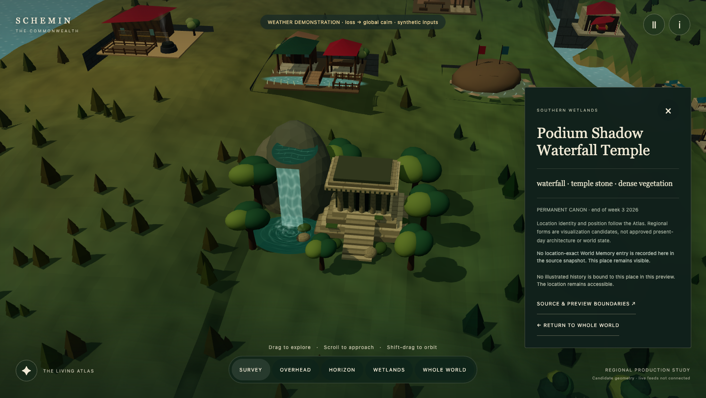
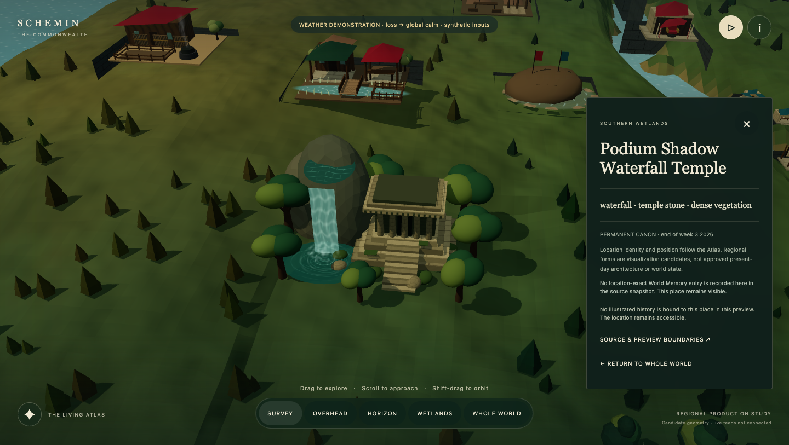

Commonwealth / Southern Wetlands / engineering evidence
Podium Shadow Waterfall Temple
Compare four existing, source-pinned physical WebGL2 frames with a wipe or difference display. The left study is ordinary movement during synthetic GLOBAL_CALM; the right is a deliberately paused scene. Neither is a new render, live weather measurement or approved artwork.
Location LOC-TDS-WATERFALL-TEMPLE · original render-source revision 1bb6f58935e610edd1c828a1996790cc3aa29e68 · Apple M3 Pro ANGLE Metal · original captures 1440 × 813
01 / Motion under synthetic global calm

FRAME UNAVAILABLE. Do not infer motion from missing evidence.
02 / Explicit-pause control


FRAME UNAVAILABLE. Do not infer stillness from missing evidence.
Rectangle boundaries are source screenshot pixels, not geographic coordinates or isolated shader IDs. The physical capture, integrity manifest and executed region tests are retained alongside this page. In the moving frames, the water-containing screen regions change while the fixed ground control remains stable; after explicit pause, the tested regions are unchanged. The world itself remains source-bound and this inspection cannot modify it.
Status: CANDIDATE_NOT_APPROVED; publication not authorized. No private memo art, independent artistic acceptance, GPU performance certification, public hosting or live El Niño weather claim is implied. Capture manifest.